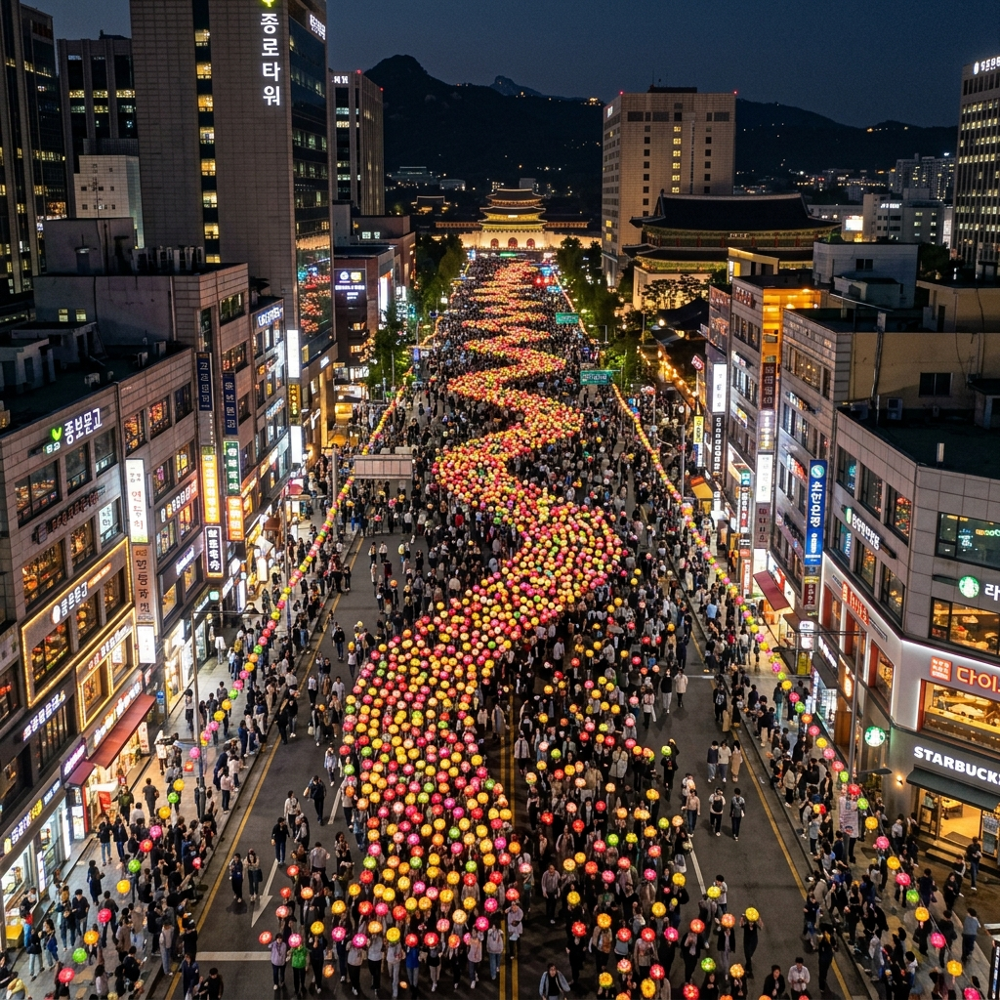
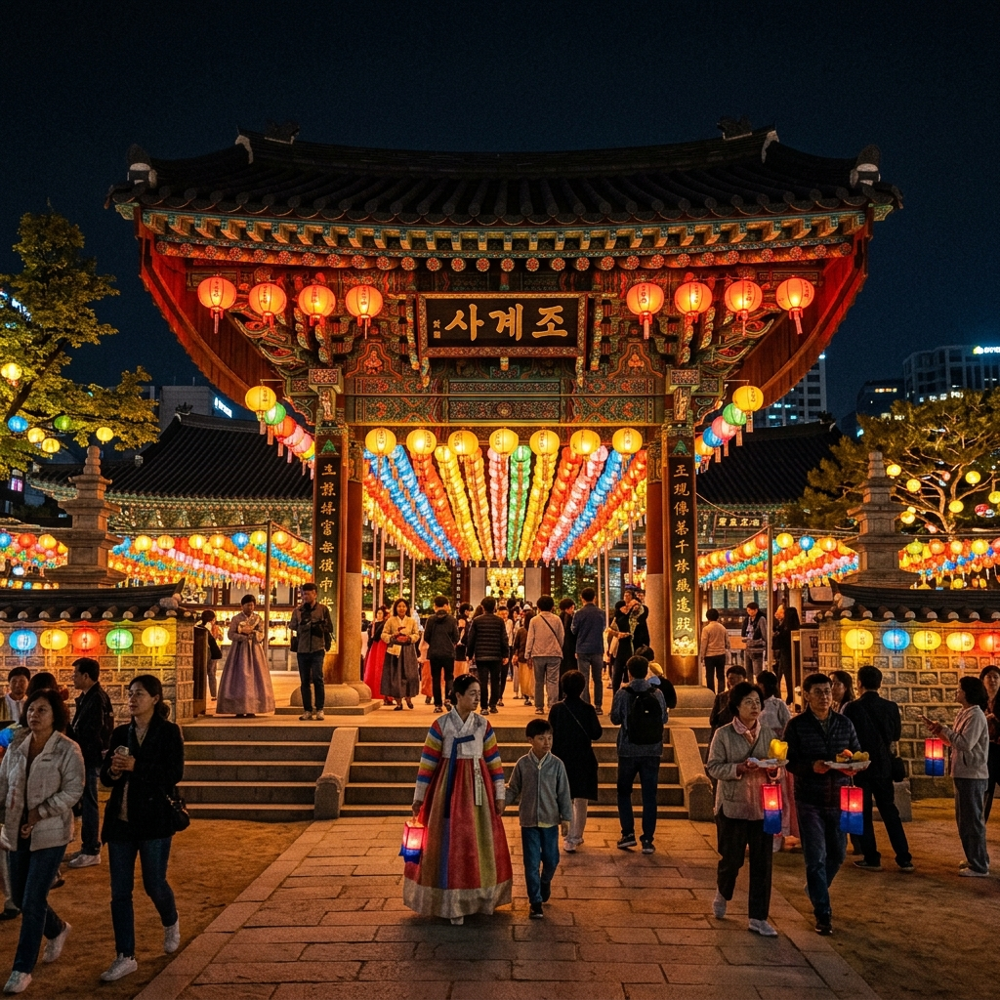
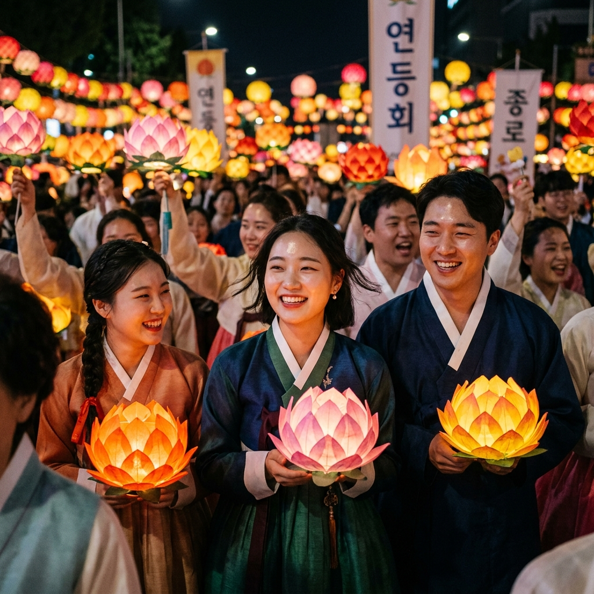

서울 종로 연등행렬 2026
동대문~조계사 명당 가이드와 부대행사 총정리
5월의 서울 종로 하늘 아래, 수만 개의 연등이 밤바람에 흔들리며 행진합니다. 연등행렬은 연등회의 핵심 행사로, 매년 부처님오신날 전날 토요일에 동대문에서 출발하여 조계사까지 이어지는 장엄한 빛의 행진입니다. 2026년 연등행렬은 5월 23일(토)에 진행될 예정입니다. 형형색색의 연등을 손에 든 수만 명의 행렬 참가자들이 종로 거리를 가득 메우는 장면은, 한국에서만 볼 수 있는 손꼽히는 축제 장관입니다. 어떤 자리에서, 어떻게 즐겨야 가장 감동적인지를 지금 알려드리겠습니다.
🏮 연등행렬의 역사와 문화적 가치
연등행렬은 불교의 연등 공양 전통에서 비롯된 행사입니다. 등불을 밝혀 부처의 지혜와 자비를 상징하는 이 의식은 삼국시대부터 시작되어 천 년 이상의 역사를 자랑합니다. 고려 시대에는 연등회가 국가적 행사로 열렸고, 조선 시대를 거쳐 현대에는 국민 모두가 즐기는 개방적인 문화 축제로 발전했습니다.
2021년 유네스코 인류무형문화유산으로 등재된 연등회는 단순한 종교 행사를 넘어 화합과 나눔, 평화의 가치를 담은 살아있는 문화유산으로 세계가 인정했습니다. 연등행렬 당일에는 불교 신자뿐만 아니라 외국인 관광객, 종교가 다른 시민들까지 모두 함께 어우러져 축제를 즐기는 포용의 장이 펼쳐집니다.
종로 연등행렬의 특별한 점은 단순히 걷는 행렬이 아니라는 것입니다. 각 사찰과 단체별로 특색 있는 연등 조형물 차량, 전통 타악 공연단, 가면 행렬, 외국인 불자 그룹의 참여 등 다양한 볼거리가 함께 이동하며 하나의 이동하는 공연이 펼쳐집니다.

[종로 연등행렬 장관 — 항공 촬영 시점] / AI 생성 이미지
📅 2026년 연등행렬 일정 및 코스
2026년 연등행렬은 부처님오신날(5월 24일) 전날인 5월 23일(토)에 진행됩니다.
| 구분 | 내용 |
|---|
| 행렬 날짜 | 2026년 5월 23일(토) |
| 행렬 출발 시간 | 오후 7시경 (일몰 후 시작) |
| 출발 지점 | 동대문 (흥인지문) 앞 |
| 도착 지점 | 조계사 |
| 주요 경유지 | 동대문 → 종로 5가 → 종로 3가 → 탑골공원 → 조계사 |
| 총 행렬 길이 | 약 3.5km |
| 소요 시간 | 약 2~3시간 (행렬 통과 기준) |
| 부대행사 | 조계사 회향 한마당, 전통 타악 공연, 연등 체험 부스 |
행렬이 시작되면 동대문에서 조계사까지 약 3.5km 구간에 걸쳐 수만 명의 참가자가 이어지는 장관이 펼쳐집니다. 행렬 통과 시간은 구경하는 위치에 따라 1~3시간 정도 소요됩니다. 가장 풍성하게 즐기려면 행렬이 도착하는 조계사 주변에서 관람하세요.
🎯 연등행렬 관람 명당 TOP 5
어느 자리에서 연등행렬을 봐야 가장 감동적인지, 위치별 특성을 상세히 안내합니다.
① 동대문(흥인지문) 앞 출발 지점
행렬이 시작하는 곳으로, 가장 정렬된 상태의 행렬을 볼 수 있습니다. 오후 6시 이전부터 대기하면 앞자리를 확보할 수 있습니다. 행렬 참가자들의 준비하는 모습부터 출발하는 순간까지를 생생하게 담을 수 있는 최고의 '오프닝 자리'입니다.
② 종로 5가 ~ 종로 3가 중간 지점
행렬이 어느 정도 펼쳐진 상태로 지나가므로, 다양한 사찰 소속 연등 차량과 타악 공연단을 한꺼번에 볼 수 있습니다. 양쪽 인도 어디서도 잘 보입니다만, 건물 2층 이상의 창문이나 테라스를 확보할 수 있다면 내려다보는 항공 시점의 장관을 즐기실 수 있습니다.
③ 탑골공원 맞은편
3.1운동의 성지 탑골공원 앞은 종로에서 가장 넓은 도로 구간 중 하나입니다. 연등 행렬이 넓게 펼쳐지며 지나가므로 동영상 촬영에 최적인 자리입니다. 야간 조명을 받은 탑골공원 담장과 연등의 조화도 인상적입니다.
④ 인사동 입구
인사동 골목과 연결되는 이 지점은 행렬의 분위기가 가장 무르익는 구간입니다. 행렬 관람 후 인사동 골목으로 걸어 들어가 야간 식사나 카페를 즐기는 루틴으로 연결하기 좋습니다.
⑤ 조계사 앞 회향 한마당
행렬의 마지막 목적지인 조계사 앞에서는 모든 참가자들이 한데 모여 '회향 한마당' 행사가 펼쳐집니다. 전통 공연, 연등 체험, 사찰 음식 나눔 등 풍성한 부대행사를 즐길 수 있어 행렬 종착지를 먼저 점령하고 기다리는 것도 전략입니다.

[조계사 회향 한마당 — 연등 장식] / AI 생성 이미지
🎉 연등회 부대행사 완전 정리
연등행렬 당일 하루에만 즐길 수 있는 다양한 부대행사들을 소개합니다.
🪘 전통 타악 퍼포먼스
행렬 도중 각 사찰 소속 풍물패와 타악 공연단이 사물놀이·북춤·농악을 선보입니다. 특히 행렬 선두를 이끄는 공연단의 격렬한 퍼포먼스는 행사의 분위기를 최고조로 끌어올립니다.
🏮 외국인 참가자 행렬
세계 각국에서 온 외국인 불자들이 자국 전통 의상이나 각 나라 연등 스타일을 들고 참가합니다. 다양한 민족과 문화가 한 자리에 어우러지는 진정한 세계 축제의 모습을 경험할 수 있습니다.
🌸 조계사 연등 체험 부스
조계사 경내에 설치된 체험 부스에서 직접 연등을 만들어볼 수 있습니다. 어린이들의 체험 교육에 특히 좋으며, 완성된 연등에 소원을 적어 봉헌하는 경험도 할 수 있습니다.
🍚 사찰 음식 나눔
행사 당일 조계사를 비롯한 주요 사찰에서 비빔밥, 나물 반찬, 차 등 정갈한 사찰 음식을 무료로 나눠드립니다. 평소 사찰 음식을 경험하기 어렵다면 이 날을 이용해 보세요.
🚇 교통 완전 정리 — 주차는 포기하세요
연등행렬 당일에는 종로 전 구간이 차량 통제됩니다. 자가용 방문은 사실상 불가능하며, 대중교통 이용이 유일한 현실적 방법입니다.
동대문 방향 (행렬 시작 지점)
1호선 동대문역, 2·4호선 동대문역사문화공원역 하차. 도보 5분.
종로 중간 지점
1호선 종로3가역, 3·5호선 종로3가역 하차. 도보 즉시.
조계사 방향 (행렬 종착 지점)
3호선 안국역 하차 후 조계사 방향 도보 5분. 또는 1·3·5호선 종로3가역에서 조계사 방향 도보 10분.
행사 당일 서울 지하철은 자정 이후까지 연장 운행하는 경우가 많으니, 심야 귀가도 부담 없이 이루어집니다. 행사 당일 서울교통공사 공지를 확인하세요.

[연등행렬 참가자들 근접 촬영] / AI 생성 이미지
📸 연등행렬 촬영 실전 가이드
연등행렬의 감동을 완벽하게 남기기 위한 사진·영상 촬영 팁을 공유합니다.
카메라 세팅 — 야간 움직이는 피사체를 찍어야 하므로 ISO를 1600~3200 수준으로 올리고, 셔터 속도를 1/60초 이상으로 유지하세요. 스마트폰은 야간 모드(밤 모드) 또는 프로 모드를 활용하되, 손 떨림이 있으면 연속 촬영 후 가장 선명한 컷을 선택하세요.
영상 촬영 팁 — 행렬이 가까이 다가오는 전·후 모두를 찍되, 타악 퍼포먼스 장면은 반드시 음성도 함께 녹음하세요. 행렬의 소리까지 담겨야 현장의 열기가 전달됩니다.
자리 확보 전략 — 행렬 시작 1시간 전(오후 6시경)부터 원하는 자리에서 대기하세요. 특히 건물 앞 계단이나 담장 위처럼 한 단계 높은 곳을 확보하면 인파에 가리지 않고 좋은 사진을 찍을 수 있습니다.
🌐 연등행렬과 인사동·북촌 연계 코스
연등행렬 관람 전후로 인사동과 북촌 한옥마을을 연계하면 서울의 전통 문화를 하루에 모두 경험하는 알찬 코스가 됩니다.
오후 코스 (오후 2시~6시)
안국역 도착 → 북촌 한옥마을 산책 (1시간) → 경복궁 담장 따라 걷기 (30분) → 인사동 공예 갤러리 방문 (30분) → 연등행렬 자리 확보 (오후 6시)
저녁 코스 (오후 7시~10시)
연등행렬 관람 → 인사동 야간 카페 및 식사 → 조계사 회향 한마당 부대행사 참여
연등회 시즌에 북촌 한옥마을을 방문하면 전통 한옥 골목에도 연등이 걸려 있어 낮에도 축제 분위기를 느낄 수 있습니다. 일본·중국·동남아시아 등 해외에서 온 관광객들이 이 시즌에 집중적으로 서울을 찾는 이유이기도 합니다.
❓ 연등행렬 자주 묻는 질문
Q. 행렬에 직접 참가할 수 있나요?
A. 네, 가능합니다. 연등행렬 참가 신청은 연등회 공식 홈페이지(llf.or.kr)에서 가능합니다. 연등 구매 후 신청하면 행렬에 함께 걸을 수 있습니다. 외국인도 참가 가능합니다.
Q. 어린아이와 함께 방문해도 괜찮을까요?
A. 인파가 매우 많으므로 유아 동반 시 유아용 백팩 캐리어나 단단히 손을 잡는 것이 필요합니다. 동대문 출발 지점이나 조계사 도착 지점처럼 비교적 넓은 공간을 추천합니다.
Q. 행렬 전체를 다 보려면 얼마나 기다려야 하나요?
A. 한 지점에 서 있을 경우 행렬 전체가 통과하는 데 약 2~3시간이 소요됩니다. 인내심이 없다면 행렬 초반부만 보고 조계사로 이동하여 회향 행사를 즐기는 방법도 있습니다.
Q. 비가 오면 행렬이 취소되나요?
A. 소나기 수준의 비에는 행사가 진행됩니다만, 폭우나 강풍 등 기상 악화 시 일정이 조정될 수 있습니다. 행사 당일 연등회 공식 SNS(@yeondeunghoe)에서 실시간 공지를 확인하세요.
#연등행렬2026
#종로연등
#연등회
#부처님오신날
#조계사
#서울야간축제
#유네스코무형유산
#서울여행
#동대문
#서울가볼만한곳